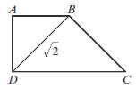
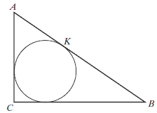

Matura 2011 listopad
Największa liczba naturalna \(n\) spełniająca nierówność \(n\lt 2\pi -1\) to:
A.\( 3 \)
B.\( 5 \)
C.\( 6 \)
D.\( 0 \)
B
Liczba \(\frac{\sqrt[4]{16}+\sqrt[3]{3\frac{3}{8}}}{\left (\frac{2}{7}
\right)^{-1}}\) jest równa
A.\( -1 \)
B.\( \frac{4}{49} \)
C.\( -2\frac{1}{4} \)
D.\( 1 \)
D
Liczba \(\log 6\) jest równa
A.\( \log 2\cdot \log 3 \)
B.\( \frac{\log 2}{\log 3} \)
C.\( \log 2+\log 3 \)
D.\( \log 2-\log 3 \)
C
\(20\%\) pewnej liczby jest o \(16\) mniejsze od tej liczby. Tą liczbą jest
A.\( 32 \)
B.\( 20 \)
C.\( -2 \)
D.\( -20 \)
B
Rozwiązaniem równania \(-2=\frac{x-1}{x+2}\) jest liczba
A.\( -1 \)
B.\( 1 \)
C.\( 0 \)
D.\( \frac{5}{3} \)
A
Większa z liczb spełniających równanie \(x^2 + 6x + 8 =
0\) to
A.\( 2 \)
B.\( 4 \)
C.\( -2 \)
D.\( -4 \)
C
Przedział zaznaczony na osi liczbowej jest zbiorem rozwiązań nierówności
A.\( |x+1|\le 1 \)
B.\( |x+1|\ge 2 \)
C.\( |x-1|\ge 1 \)
D.\( |x-1|\le 1 \)
D
Dziedziną funkcji \(f(x)=\begin{cases} -2x+1,\quad \text{gdy }
x\lt 1\\ -x,\quad \text{gdy } 1\le x\le 4 \end{cases} \) jest zbiór
A.\( (-\infty ,4\rangle \)
B.\( \langle 1,4 \rangle \)
C.\( \langle 0,4 \rangle \)
D.\( (-\infty ,1) \)
A
Funkcja liniowa \(f(x)=(m+2)x+2m\) jest rosnąca, gdy
A.\( m<-2 \)
B.\( m\lt 2 \)
C.\( m>-2 \)
D.\( m>-4 \)
C
Rysunek przedstawia wykres funkcji \(y=f(x)\).  Funkcja jest malejąca w przedziale
Funkcja jest malejąca w przedziale
Funkcja jest malejąca w przedziale A.\( \langle 0,4 \rangle \)
B.\( \langle 1,6 \rangle \)
C.\( \langle 0,6 \rangle \)
D.\( \langle -2,4 \rangle \)
B
Punkt \(P=(a+1,2)\) należy do wykresu funkcji \(f(x)=\frac{4}{x}\). Liczba
\(a\) jest równa
A.\( 0 \)
B.\( -1 \)
C.\( 2 \)
D.\( 1 \)
D
Do zbioru rozwiązań nierówności \(9\le x^2\) należy liczba
A.\( -2 \)
B.\( 0 \)
C.\( -3 \)
D.\( 2 \)
C
Wybierz i zaznacz równanie opisujące prostą prostopadłą do prostej o równaniu
\(y=\frac{1}{2}x+1\).
A.\( y=-2x+1 \)
B.\( y=0{,}5x-1 \)
C.\( y=-\frac{1}{2}x+1 \)
D.\( y=2x-1 \)
A
Liczby \(x, 4, x+2\) są w podanej kolejności drugim,
trzecim i czwartym wyrazem ciągu arytmetycznego. Wówczas liczba \(x\) jest równa
A.\( 2 \)
B.\( 3 \)
C.\( 6 \)
D.\( 1 \)
B
W ciągu geometrycznym \((a_n)\) są dane: \(a_2=-1, q=-2\). Suma czterech
kolejnych początkowych wyrazów tego ciągu jest równa
A.\( 2{,}5 \)
B.\( -7{,}5 \)
C.\( -2{,}5 \)
D.\( 7{,}5 \)
C
Kąt \(\alpha \) jest ostry oraz \(\sin \alpha =\frac{2}{5}\). Wówczas
A.\( \cos \alpha =\sin \alpha \)
B.\( \cos \alpha >\sin \alpha \)
C.\( \cos \alpha \lt \sin \alpha \)
D.\( \cos \alpha =1-\sin \alpha \)
B
Dane są wielomiany \(W(x)=x^4-1\) oraz \(V(x)=x^4+1\). Stopień wielomianu
\(W(x)+V(x)\) jest równy
A.\( 4 \)
B.\( 8 \)
C.\( 16 \)
D.\( 0 \)
A
Mediana danych: \(-4, 2, 6, 0, 1\) jest równa
A.\( 6 \)
B.\( 0 \)
C.\( 2{,}5 \)
D.\( 1 \)
D
Liczba punktów wspólnych okręgu o równaniu \((x-1)^2+y^2=4\) z prostą \(y=-1\) jest równa
A.\( 0 \)
B.\( 1 \)
C.\( 2 \)
D.\( 3 \)
C
Punkty \(A=(-2,-1)\) i \(B=(2,2)\) są wierzchołkami trójkąta równobocznego
\(ABC\). Wysokość tego trójkąta jest równa
A.\( 2{,}5 \)
B.\( 2\sqrt{3} \)
C.\( 5\sqrt{3} \)
D.\( 2{,}5\sqrt{3} \)
D
Dany jest okrąg o środku w punkcie \(S\). Miara kąta \(\alpha \) jest równa \(70^\circ\). Oblicz sumę
miar kątów \(\beta \) i \(\gamma \).
A.\( 180^\circ \)
B.\( 210^\circ \)
C.\( 70^\circ \)
D.\( 140^\circ \)
B
Trapez jest prostokątny. Trójkąty podobne \(ABD\) i \(CBD\) są równoramienne.
 Obwód trapezu jest równy
A.\( 4+2\sqrt{2} \)
B.\( 2\sqrt{2} \)
C.\( 4+\sqrt{2} \)
D.\( 4 \)
C
Graniastosłup ma \(2n+6\) wierzchołków. Liczba
wszystkich krawędzi tego graniastosłupa jest równa
A.\( n+3 \)
B.\( 4n+8 \)
C.\( 6n+18 \)
D.\( 3n+9 \)
D
Tworząca stożka jest o \(2\) dłuższa od promienia podstawy. Pole powierzchni
bocznej tego stożka jest równe \(15\pi \). Tworząca stożka ma zatem długość
A.\( 1 \)
B.\( 5 \)
C.\( 3 \)
D.\( 15 \)
B
Cztery dziewczynki i sześciu chłopców siedzą na tym samym pniu zwalonego dębu.
Dziewczynki siedzą obok siebie i chłopcy również siedzą obok siebie. Wszystkich możliwych
sposobów posadzenia dzieci w ten sposób jest
A.\( 4\cdot 6 \)
B.\( 2\cdot 4\cdot 6! \)
C.\( 6!\cdot 4! \)
D.\( 2\cdot 4!\cdot 6! \)
D
Napisz równanie prostej równoległej do prostej o równaniu \(-3x+y-4=0\) i przechodzącej przez punkt \(P=(-1,-4)\).
\(y=3x-1\)
W trójkącie prostokątnym jedna z przyprostokątnych ma długość \(a\). Kąt ostry
przy tym boku ma miarę \(\alpha \). Wykaż, że \(\sin \alpha +\cos \alpha >1\).
Wykaż, że przekątna prostopadłościanu o krawędziach długości \(a, b, c\) ma
długość \(\sqrt{a^2+b^2+c^2}\).
Rozwiąż nierówność \(x^2 + 5x \le 6\).
\(x\in \langle -6; 1 \rangle \)
Wiadomo, że \(A\) i \(B\) są takimi zdarzeniami losowymi zawartymi w \(\Omega
\), że \(P(A) = 0{,}7\), \(P(B)=0{,}6\) i \(P(A\cup B)=0{,}8\). Oblicz \(P(A \cap B)\).
\(P(A\cap B)=0{,}5\)
Przekątna równoległoboku ma długość \(10\) cm i tworzy z krótszym bokiem kąt
prosty, a z dłuższym bokiem kąt \(30^\circ\). Oblicz długość krótszego boku tego równoległoboku.
\(\frac{10\sqrt{3}}{3}\)
Okrąg wpisany w trójkąt prostokątny \(ABC\) jest styczny do przeciwprostokątnej
\(AB\) w punkcie \(K\). Wiadomo, że \(|AK| = 4\) i \(|KB| = 6\). Oblicz promień tego okręgu.

\(r=2\)
Rzucamy dwukrotnie kostką do gry. Jakie jest prawdopodobieństwo tego, że liczba
oczek otrzymana w pierwszym rzucie jest większa od liczby oczek otrzymanej w drugim rzucie?
\(\frac{5}{12}\)
Piramida ma kształt ostrosłupa prawidłowego czworokątnego, którego wysokość
jest równa \(6\), a długość krawędzi bocznej jest równa \(2\sqrt{15}\). Oblicz miarę kąta
nachylenia ściany bocznej piramidy do podstawy.
\(60^\circ \)